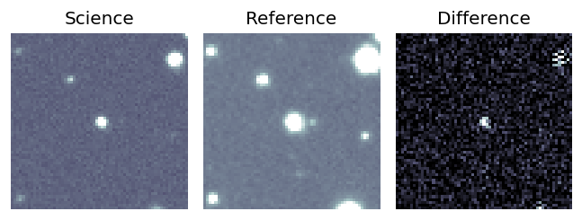
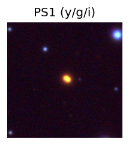
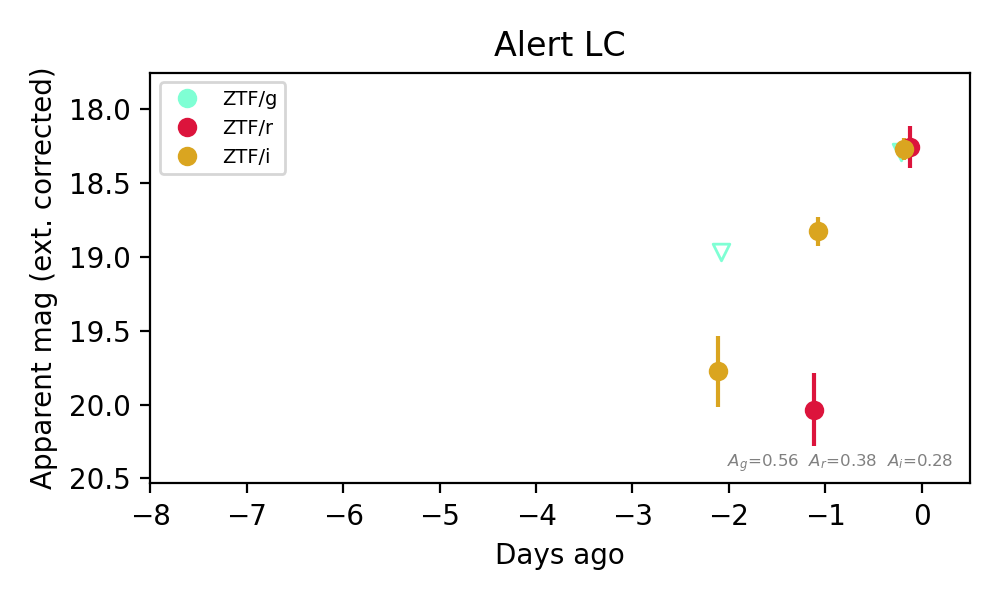
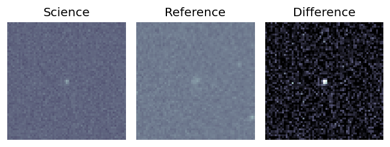
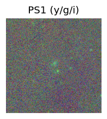
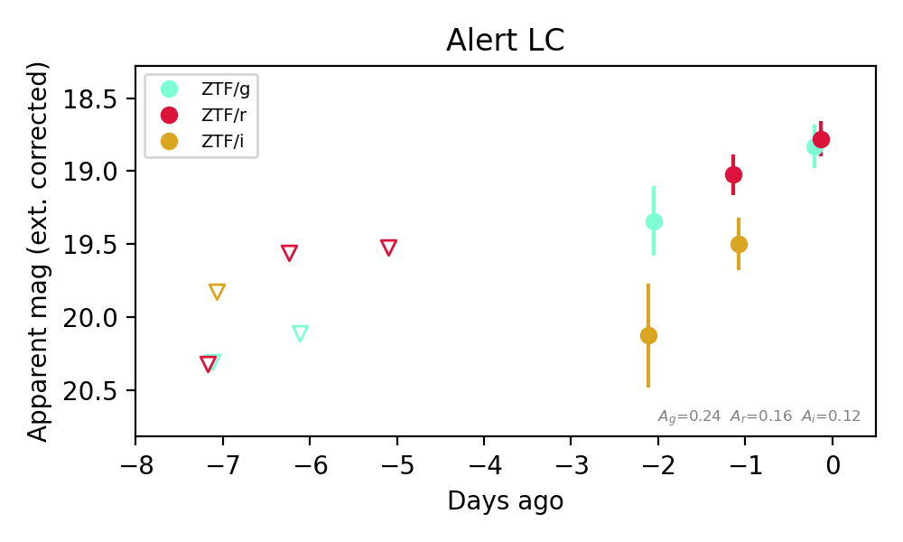
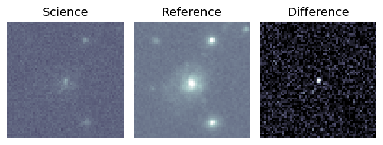
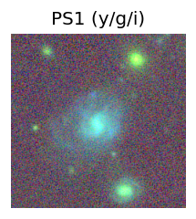
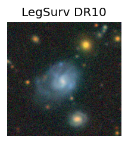
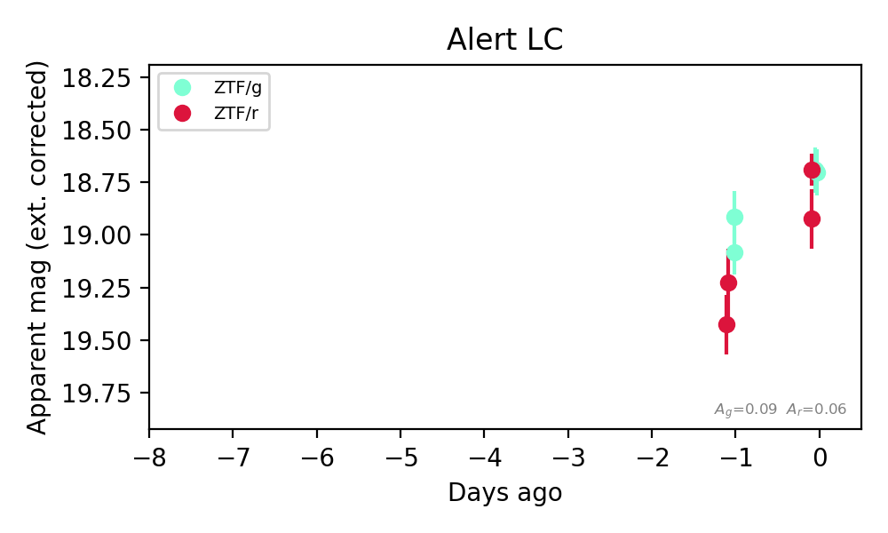

Candidate List 20261026Last night — ZTF: 1,716 passed basic cuts (46 young) · LSST: 0 passed basic cuts (0 young)Previous Day Next Day
Section 1: New Sources (age<1d) Section 2: Old (1-5d) sources observed last nightplaceholder
Section 1: New Afterglow/FBOT Cands Last Night (0)
Section 2: Older Sources Observed Last Night (6)
0. [ZTF] ZTF26accpume (FBOT?) [Back to Top] [Share] [Trigger Swift] [Fritz Alert] [Fritz Source] [Lasair]RA, Dec: 330.03232, 39.93984 22h 0m7.76s, 39d56m23.41sGalactic (l, b): 90.73511, -11.9889 ext(g-r) = 0.259


TESS: Sectors [ 16 83 121]
PS1: 1 source in 3 arcsec Closest: d = 0.82 arcsec photoz=0.27+/-0.03 peak abs mag = -23.27
LegacySurvey: 0 sources in 3 arcsec

Extinction-corrected gr color:
From alerts: -0.25 +/- 0.12 mag
Rise Rate:
g: 0.26 mag/day
r: 0.2 mag/day
Fade Rate:
1. [ZTF] ZTF18aczxhnq (Afterglow?) [Back to Top] [Share] [Trigger Swift] [Fritz Alert] [Fritz Source] [Lasair]RA, Dec: 76.9814, 5.1642 5h 7m55.54s, 5d 9m51.12sGalactic (l, b): 195.67727, -20.23198 ext(g-r) = 0.18

TESS: Sectors [ 98 110]
PS1: 0 sources in 3 arcsec
LegacySurvey: 0 sources in 3 arcsec

Extinction-corrected gr color:
From alerts: 0.04 +/- 99 mag
Extinction-corrected gi color:
From alerts: 0.02 +/- 99 mag
Extinction-corrected ri color:
From alerts: -0.02 +/- 0.16 mag
Consistent with synchrotron, g-r>0!
Rise Rate:
r: 1.78 mag/day
i: 0.71 mag/day
Fade Rate:
2. [ZTF] ZTF26accttyl (FBOT?) (TNS: AT 2017cgf) [Back to Top] [Share] [Trigger Swift] [Fritz Alert] [Fritz Source] [Lasair]RA, Dec: 127.28506, 48.4441 8h29m8.41s, 48d26m38.77sGalactic (l, b): 171.08515, 35.82722 ext(g-r) = 0.039

TESS: Sectors [20 47 60]
SDSS (<15 kpc):Found SDSS phot-z: z=0.29; peak abs mag = -25.63
PS1: 0 sources in 3 arcsec
LegacySurvey: 1 sources in 3 arcsec Closest: d = 0.07 arcsec, 190.7 deg (east of north) photoz=0.51 (68% bounds 0.36, 0.71), type=PSF peak abs mag (ext. corrected) = -27.11 (68% bounds -26.24, -27.98)

Extinction-corrected gr color:
From alerts: -0.39 +/- 0.04 mag
Rise Rate:
g: 1.03 mag/day
r: 0.79 mag/day
Fade Rate:
g: 0.13 mag/day
r: 0.12 mag/day
3. [ZTF] ZTF26accuvdb (FBOT?) [Back to Top] [Share] [Trigger Swift] [Fritz Alert] [Fritz Source] [Lasair]RA, Dec: 72.52972, 78.35424 4h50m7.13s, 78d21m15.27sGalactic (l, b): 133.67689, 20.84718 ext(g-r) = 0.133

TESS: Sectors [19 25 26 52 53 59 60 73 79 86]
PS1: 1 source in 3 arcsec Closest: d = 0.97 arcsec photoz=0.11+/-0.05 peak abs mag = -19.64
LegacySurvey: 0 sources in 3 arcsec

Extinction-corrected gr color:
From alerts: -0.07 +/- 0.21 mag
Consistent with synchrotron, g-r>0!
Rise Rate:
g: 0.22 mag/day
r: 0.36 mag/day
Fade Rate:
4. [ZTF] ZTF26accuybn (FBOT?) [Back to Top] [Share] [Trigger Swift] [Fritz Alert] [Fritz Source] [Lasair]RA, Dec: 69.51718, -10.87211 4h38m4.12s, -10d-52m-19.60sGalactic (l, b): 207.4828, -34.4995 ext(g-r) = 0.076

TESS: Sectors [ 32 98 106 109]
PS1: 0 sources in 3 arcsec
LegacySurvey: 1 sources in 3 arcsec Closest: d = 0.83 arcsec, 345.0 deg (east of north) photoz=0.23 (68% bounds 0.17, 0.42), type=EXP peak abs mag (ext. corrected) = -21.63 (68% bounds -20.8, -23.1)

Extinction-corrected gr color:
From alerts: 0.05 +/- 0.19 mag
Extinction-corrected gi color:
From alerts: -0.78 +/- 0.43 mag
Extinction-corrected ri color:
From alerts: -0.47 +/- 0.23 mag
Consistent with synchrotron, g-r>0!
Rise Rate:
g: 0.22 mag/day
r: 0.22 mag/day
i: 0.05 mag/day
Fade Rate:
5. [ZTF] ZTF26accvzpd (Afterglow?) [Back to Top] [Share] [Trigger Swift] [Fritz Alert] [Fritz Source] [Lasair]RA, Dec: 155.22269, 65.68621 10h20m53.45s, 65d41m10.36sGalactic (l, b): 143.71784, 44.88786 ext(g-r) = 0.028


TESS: Sectors [ 14 21 40 41 47 48 74 75 119 120]
SDSS (<15 kpc):Found SDSS phot-z: z=0.03; peak abs mag = -16.81
PS1: 0 sources in 3 arcsec
LegacySurvey: 1 sources in 3 arcsec Closest: d = 1.94 arcsec, 155.3 deg (east of north) photoz=0.03 (68% bounds 0.02, 0.03), type=SER peak abs mag (ext. corrected) = -16.64 (68% bounds -16.04, -17.08)

Extinction-corrected gr color:
From alerts: -0.05 +/- 0.1 mag
Consistent with synchrotron, g-r>0!
Rise Rate:
g: 0.32 mag/day
r: 0.59 mag/day
Fade Rate: